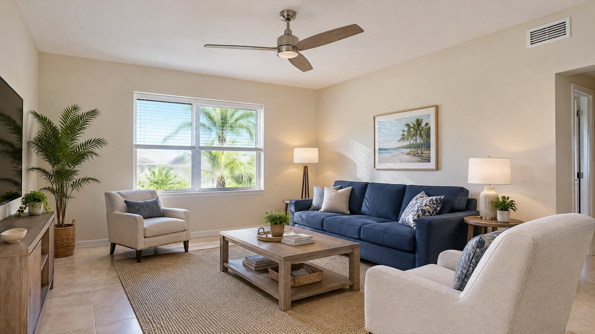

Why a Breeze Feels Cooler Without Pre-Cooling the Room
A ceiling fan moves the room's existing air. The breeze can make a person feel cooler, but the fan does not provide refrigerated air. ENERGY STAR describes the effect plainly: ceiling fans cool people, not rooms, and should be turned off when a room is unoccupied. [1]
That distinction explains a common experience: you enter a room, turn on the fan and feel relief before the AC has changed anything. You are noticing air movement around you, not evidence that the fan has reduced the room's cooling load. Leaving it running all afternoon does not store that breeze for your return.
Air movement can mix warmer and cooler areas within a room. That is not the same as removing heat from the house. For ordinary personal-comfort use, the useful question is whether someone is there to benefit from the draft.
The Empty-Room Habit to Change
If you leave a bedroom, office or living room unoccupied, switch the ceiling fan off using its normal control. Turn it back on when someone returns and wants the breeze. This follows ENERGY STAR's unoccupied-room usage advice. [1]
Choosing a more efficient fan does not change that habit. ENERGY STAR's product guidance describes improved motors, blade designs and independent efficiency certification. Those features improve the fan's air-moving job; they do not turn it into refrigerated cooling for an empty room. [2]
Running a fan uses electricity even when no one benefits from the air movement. The amount depends on the actual fan, speed and operating time; there is no single dollar saving that applies to every Tampa home. If the fan has a light, check the separate controls so turning off the breeze does not leave an unwanted light on.
This is an empty-room ceiling-fan decision—not an instruction to turn off the home's AC whenever you leave. Cooling schedules and indoor moisture need their own consideration. It also is not a reason to close AC supply vents in unused rooms.
Use the Ceiling Fan and AC for Different Jobs
In an occupied room, a ceiling fan may make a somewhat warmer cooling setting feel comfortable. ENERGY STAR says potential energy benefits depend on how the fan is used and on thermostat adjustment. A fan running at the same AC setting adds another electrical load; do not assume that switching it on automatically reduces the total bill. [1]
Use the fan's normal controls and the equipment instructions to find comfortable air movement. If you change the cooling target, pay attention to both comfort and moisture rather than copying someone else's setting. No fixed temperature increase is appropriate for every household, control system or room.
Do not confuse the room fan with the central air handler. The thermostat's Fan setting operates the central blower, not the ceiling fan. Our AC fan Auto-versus-On explanation covers that separate decision, including why whole-home blower operation can matter for humidity.
What to Do in Common Situations
| Situation | Room-fan choice | Separate issue to consider |
|---|---|---|
| Nobody is using the room | Turn the ordinary comfort fan off. | Keep the AC schedule and moisture needs separate. |
| Someone is sitting or sleeping there | Use the fan if its breeze is comfortable. | Choose speed and controls for that person's comfort. |
| The room feels sticky despite the breeze | Do not treat circulation as dehumidification. | Check moisture patterns and cooling performance. |
| The AC cannot reach its chosen target | A fan may provide temporary comfort. | Arrange an AC assessment rather than hiding the symptom. |
Why Tampa Humidity Changes the Follow-Up Question
A ceiling fan by itself does not remove water vapor from an enclosed room. Feeling more comfortable under the blades therefore does not establish that indoor moisture is controlled. That matters in Tampa and North Tampa when the breeze feels pleasant but the room remains damp or sticky.
EPA distinguishes moisture reduction from measures that improve air movement. Its guidance includes addressing water sources, using AC or dehumidifiers when needed and exhausting shower moisture. It also notes that air movement can help with condensation in some circumstances. So the point is not that fans can never help a damp surface; it is that circulation alone is not proof of moisture removal. [3]
If you need to evaluate ongoing humidity, use the separate whole-home dehumidifier versus AC-alone guide. A ceiling-fan habit does not decide whether your home needs additional equipment. Visible water, persistent dampness or a recurring odor calls for attention to the cause, not simply a faster fan speed.
When a Fan Is Masking a Cooling Problem
The room feeling warmer when the fan stops is not, by itself, an AC failure. You have removed the breeze. Look instead at whether the AC reaches the selected cooling target and whether the problem affects one room or the whole house.
If the cooling has changed, record the thermostat setting, displayed temperature and affected rooms. Note whether the fan only changes how you feel or whether other cooling symptoms persist. These observations help describe the issue; they do not identify a failed capacitor, low refrigerant or another specific cause.
For unresolved cooling, request AC repair assessment. Do not use a room fan as evidence that the cooling equipment is operating normally. Conversely, do not authorize a repair solely because a room feels different with its ceiling fan switched off.
Does the Rule Have Exceptions?
Some homes use fan circulation as part of a specifically designed comfort or ventilation strategy. Follow that system's documented operating plan rather than applying an empty-room habit to every kind of fan. An exhaust fan that removes air outdoors has a different purpose from a ceiling fan circulating air inside the room.
Winter ceiling-fan operation can also redistribute warm air near the ceiling into the occupied space. ENERGY STAR describes low-speed winter use, but that does not turn the ceiling fan into a heater. Use the fan manufacturer's controls and instructions for your equipment. [1]
Frequently Asked Questions
Should a ceiling fan run overnight while someone is sleeping?
A sleeping person still occupies the room and may benefit from the breeze. Use the fan if the air movement is comfortable, following the equipment instructions. The recommendation to turn it off concerns an unoccupied room, not a rule that every fan must stop at bedtime.
Why does the room feel warmer as soon as the fan stops?
The moving-air cooling effect has stopped. That immediate change in how you feel does not prove the room's actual temperature rose or that the AC failed. Compare cooling performance with the thermostat target instead of diagnosing the AC from the missing breeze.
Will a more efficient ceiling fan cool an empty room?
No. A more efficient fan can perform its air-moving job using less energy, but it does not become an air conditioner. ENERGY STAR's empty-room shutoff advice still applies to ordinary ceiling-fan comfort use.
Does turning off the ceiling fan stop the AC from circulating air?
They are separate devices. The ceiling fan moves air locally; the AC air handler moves air through the home's duct system according to its controls. Turning off the room fan does not change the thermostat's central-blower setting.
Sources
- ENERGY STAR: Ceiling Fan Installation and Usage Tips — unoccupied-room shutoff, occupant comfort and seasonal operating guidance.
- ENERGY STAR: Ceiling Fans — improved motors, blade designs and independent energy-efficiency certification.
- EPA: A Brief Guide to Mold, Moisture and Your Home — moisture-source control, humidity reduction and the distinct role of air movement.
Editorial Source Review & Publisher
On The Way Heating & Air publishes this homeowner explanation using the sources above. This article explains ordinary ceiling-fan use; it is not a diagnosis of your cooling equipment or a universal fan-control plan. Follow the instructions for your actual equipment and request an assessment when cooling or moisture problems remain unresolved.